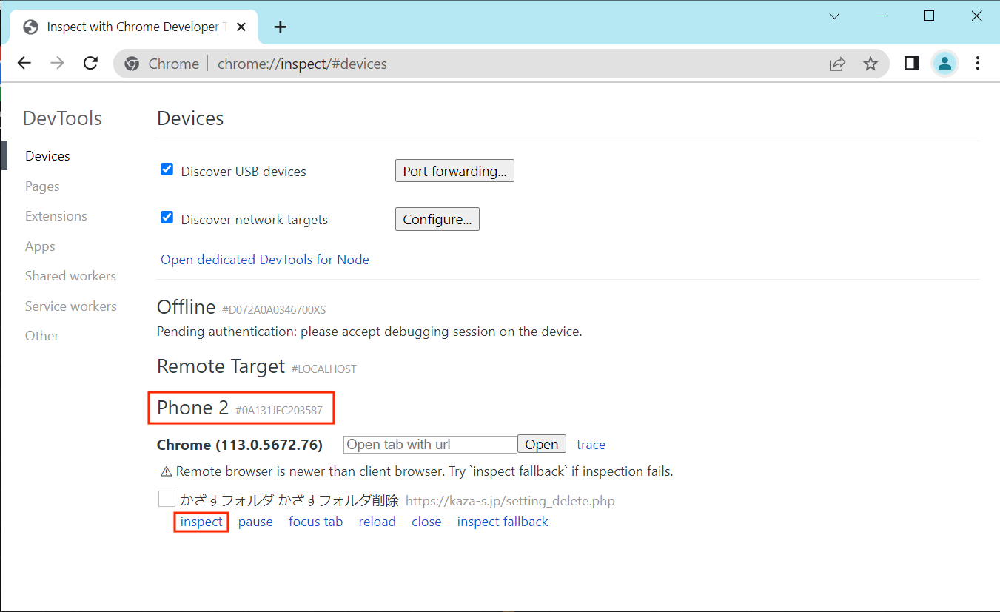
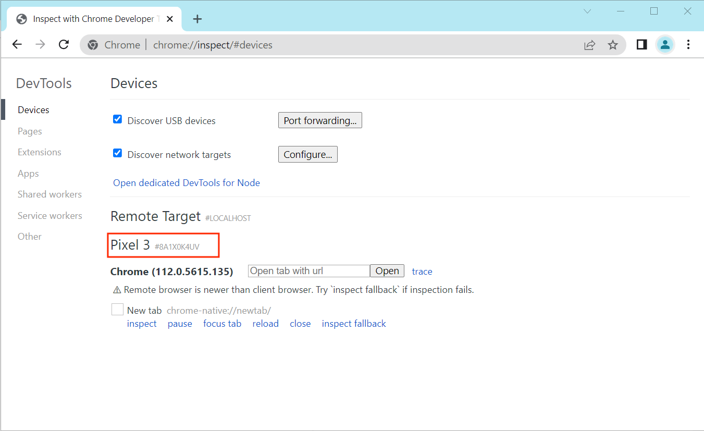
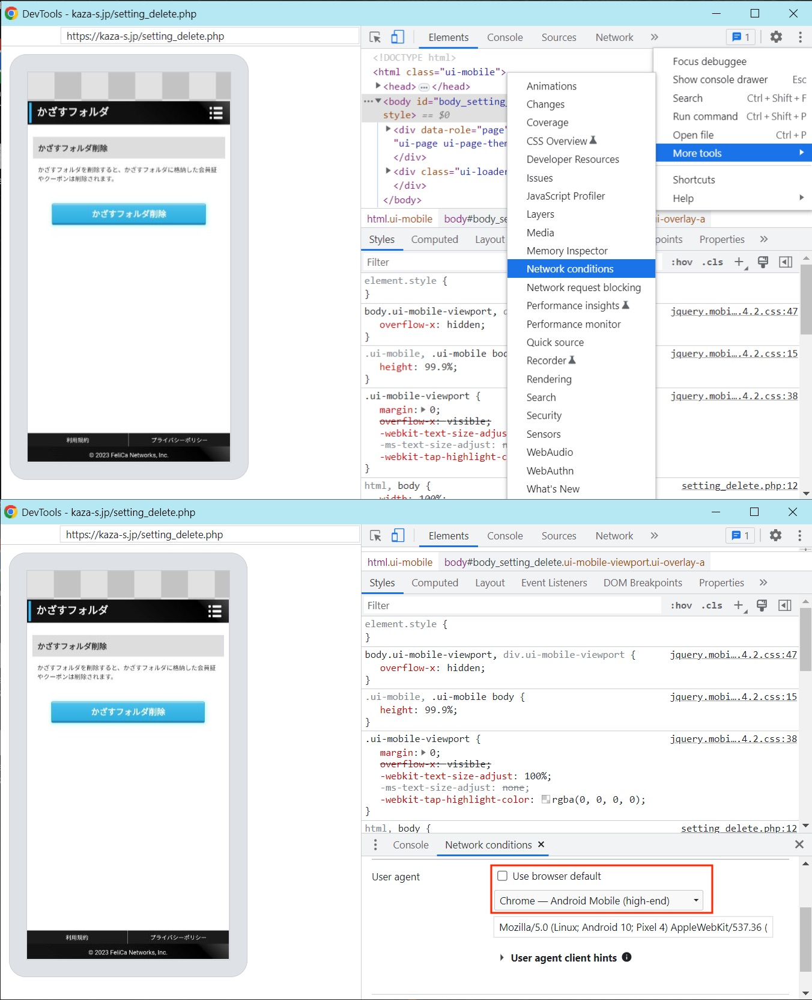

かざすフォルダ「お使いの機種ではご利用になれません」が出る時の対処法
おサイフケイタイに追加したd-Pointカードを削除しようとした時、以下のエラーが出ました。
「お使いの機種ではご利用になれません。」
ChromeのRemote Debugging機能を使って、User Agentを対応機種に偽装する（いやもともと対応機種だけど）ことで削除できました。
（root不要）
原因
私の場合は、root化などにより、ブラウザのUser Agentが変わったので、対応していない機種と判別されてしまいました。

Remote Debuggingに接続
デバイスの再起動、NFCのON/OFF、「おサイフケータイWebプラグイン」の再インストールを先にしたほうが無難でしょう。
USBデバッグをONにして、PCに接続します。
スマホのChromeでかざすフォルダ削除ページ（ http://kaza-s.jp/setting_delete.php ）を開き、
PCのChromeで chrome://inspect を開きます。
接続されている機種名、開いているページなどが表示されています。
私のPixel 4aはなぜかPhone 2になっています。

ちなみに同じroot化したPixel 3はちゃんとPixel 3として認識されています、かざすフォルダももちろん使えます。

User Agentを変更
「inspect」をクリックして、以下のようにUser Agentを変更します。

削除
ページ内の「かざすフォルダ削除」ボタンをタップすると、おサイフケイタイに進み、かざすフォルダが削除されます。

「お使いの機種ではご利用になれません。」が再び出ますが、おサイフケイタイアプリを再起動すると、削除されていることが確認できます。
かざすフォルダ「お使いの機種ではご利用になれません」が出る時の対処法
https://peashooter.cc/2023/05/10/かざすフォルダ「お使いの機種ではご利用になれません」が出る時の対処法/